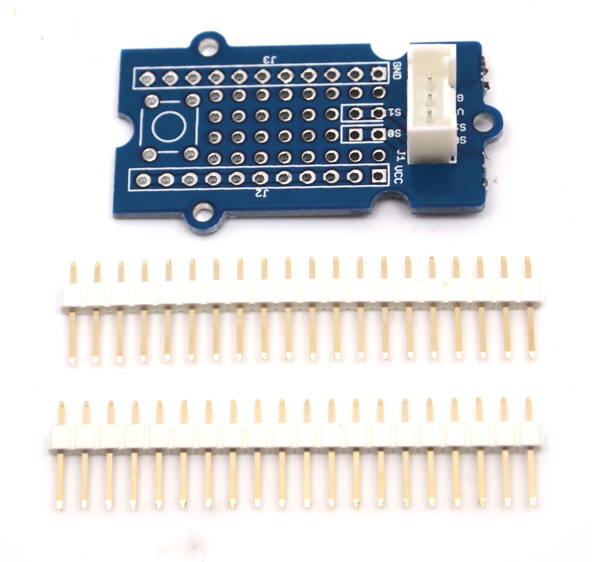
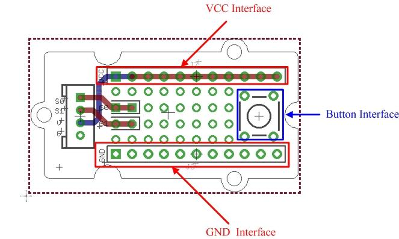
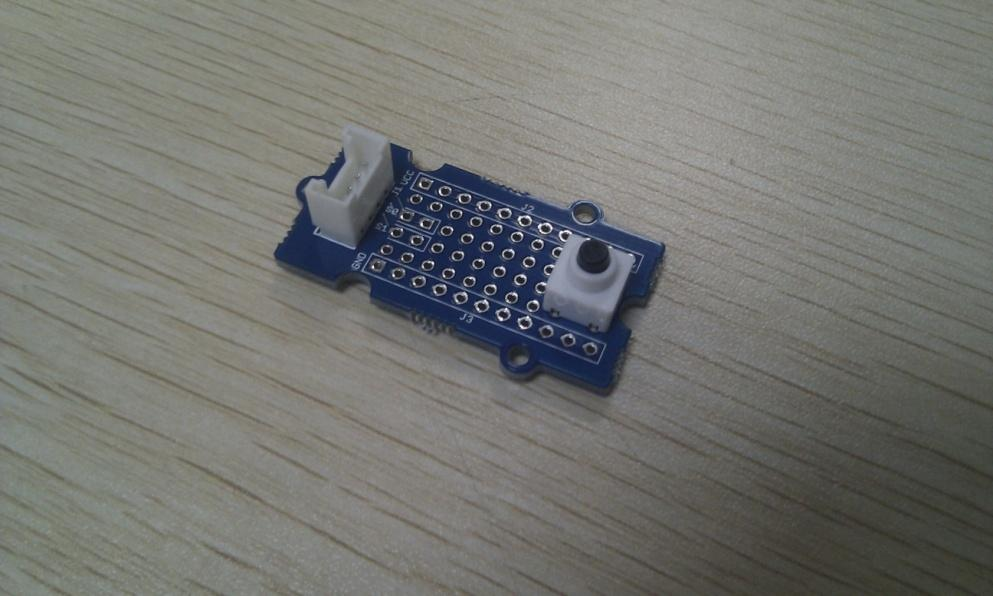
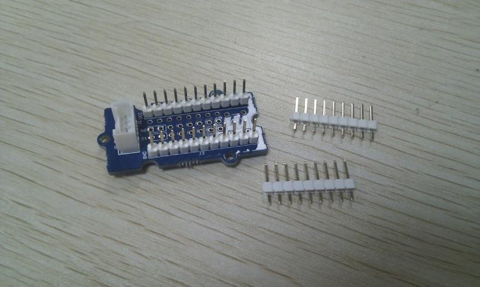
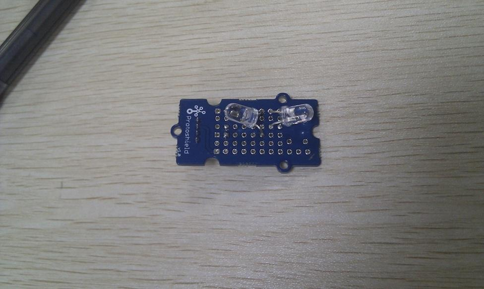

This Grove allows you to add your own circuitry or components to your Grove system prototypes. It gives you access to all four lines from the grove connector cable – S0, S1, VCC and GND. There is also a reserved space for a normally-open button. Standard 2.54mm spacing makes it easy to install normal DIP-format ICs and other components onto the board.


VCC and GND of the Grove interface are routed out as two buses as shown above. You can find soldering pads of Sig0 and Sig1 between two power buses.
VCC and GND of the Grove interface are routed out as two buses as shown above. You can find soldering pads of Sig0 and Sig1 between two power buses. They are marked out by white lines.
The square area on the right is for a ubiquitous temporary button, you can easily snap one into it as shown below.

Also the protoshield is shipped with two 20-pin male headers. You can break them into smaller pieces and solder them onto protoshield when you need extension on other breadboard or protoboard. They work well with normal breadboard jumpers.

Demo: Light LED
1. Insert the longer pin of LED into the VCC interface and the shorter pin into Sig0 interface.
2. Solder LED on the Protoshield.

3. Connect the module to the Digital 8 of Grove - Basic Shield using the 4-pin grove cable.
4. Plug the Grove - Basic Shield into Arduino and connect Arduino to PC by using a USB cable.
5. Copy and paste code below to a new Arduino sketch. Please click here if you do not know how to upload.
Demo code:
int led = 8;
// the setup routine runs once when you press reset:
void setup() {
// initialize the digital pin as an output.
pinMode(led, OUTPUT);
}
// the loop routine runs over and over again forever:
void loop() {
digitalWrite(led, HIGH); // turn the LED on (HIGH is the voltage level)
delay(1000); // wait for a second
digitalWrite(led, LOW); // turn the LED off by making the voltage LOW
delay(1000); // wait for a second
}
Grove_-_Protoshield Eagle File
If you have questions or other better design ideas, you can go to our forum or wish to discuss.
Copyright (c) 2008-2016 Seeed Development Limited (www.seeedstudio.com / www.seeed.cc)